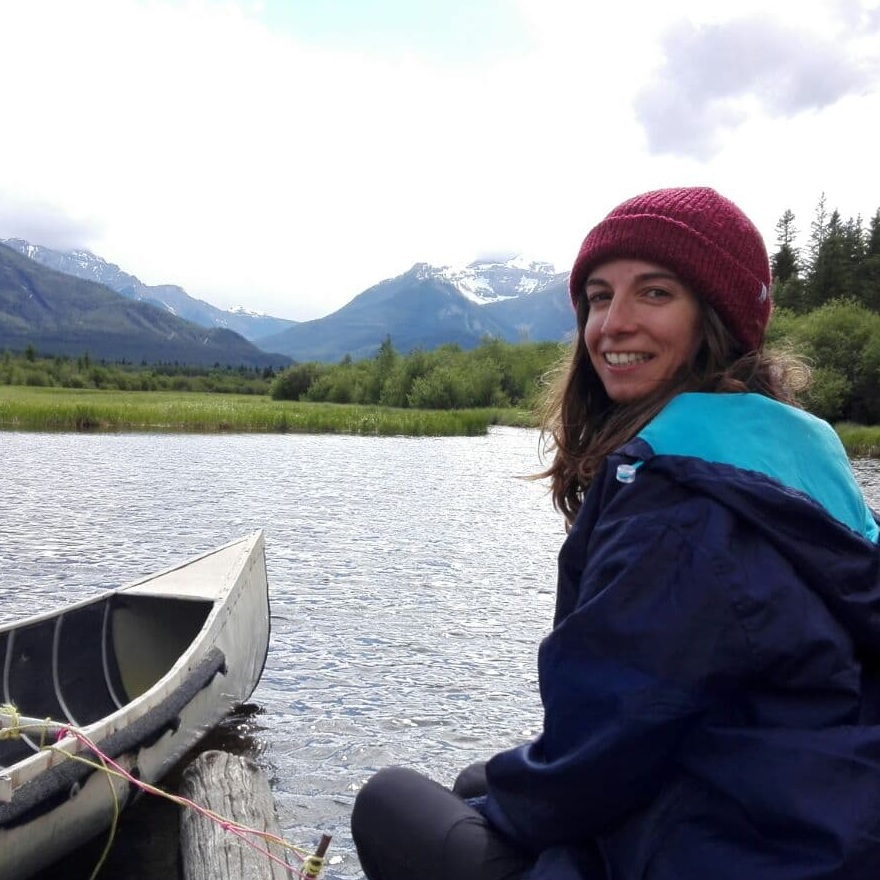

Hola, soy Gádor. Nací donde la Sierra es Nevada y las playas son de piedras
y no de arena, ¡Granada! Siempre he tenido un espíritu aventurero y una
pasión por la naturaleza y las actividades al aire libre: buceo, surf,
escalada, trekking, esquí, alpinismo… Esta pasión me ha llevado a desarrollar
un instinto de superación y adaptación, a descubrir sitios increíbles y
conocer gente maravillosa. Si no estoy programando o durmiendo, ¡búscame
en las montañas!